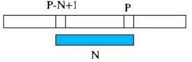
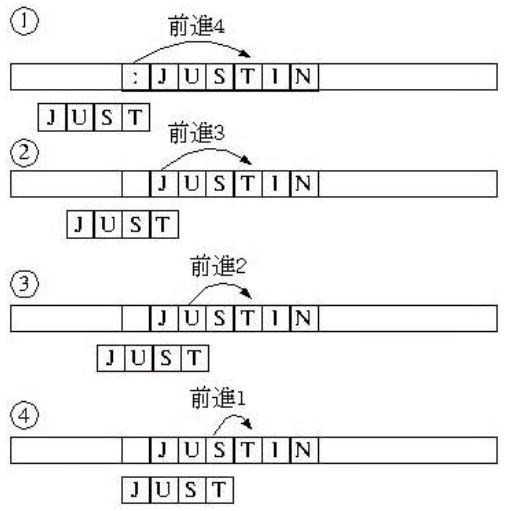

字串比對
December 1, 2021高階程式語言對於字串比對都有直接支援，不過仍是個值得探討的課題，傳統的字串比對是從關鍵字與字串的開頭開始比對，例如 Knuth-Morris-Pratt 演算法字串比對，這個方法也不錯，不過要花時間在公式計算上，這邊說明 Boyer-Moore 方法。
解法思路
Boyer-Moore 字串比對由關鍵字的後面開始核對字串，並製作前進表，如果比對不符合，依前進表中的值前進至下個核對處，假設是 p 好了，然後比對字串中 p - n + 1 至 p 的值是否與關鍵字相同。

舉個實際的例子來說明前進表的製作，若要在字串比對 “JUST” 字串，可能遇到的幾個情況如下：

依照這個例子，可以決定出前進值表如下：
| 其他 | J | U | S | T |
|---|---|---|---|---|
| 4 | 3 | 2 | 1 | 4（match?） |
如果關鍵字中有重複的字元，前進值就會有兩個以上的值，此時則取前進值較小的值，如此就不會跳過可能的位置，例如 “texture” 這個關鍵字，’t’ 的前進值應該取後面的 3 而不是取前面的 7。
程式實作
#include <stdio.h>
#include <stdlib.h>
#include <string.h>
#define SKIP_TABLE_SIZE 256
#define STRING_LENGTH 80
void table(int*, char*); // 建立前進表
int indexOf(int*, int, char*, char*); // 搜尋關鍵字
void subString(char*, char*, int, int); // 取出子字串
int main(void) {
int skip[SKIP_TABLE_SIZE];
char input[STRING_LENGTH];
char key[STRING_LENGTH];
char sub[STRING_LENGTH] = {'\0'};
printf("字串：");
gets(input);
printf("關鍵字：");
gets(key);
table(skip, key);
int m = strlen(input); // 計算字串長度
int n = strlen(key);
int p = indexOf(skip, n - 1, input, key);
while(p != -1) {
subString(input, sub, p, m);
printf("%s\n", sub);
p = indexOf(skip, p + n + 1, input, key);
}
return 0;
}
void table(int* skip, char *key) {
int n = strlen(key);
int k;
for(k = 0; k < SKIP_TABLE_SIZE; k++) {
skip[k] = n;
}
for(k = 0; k < n - 1; k++) {
skip[key[k]] = n - k - 1;
}
}
int indexOf(int* skip, int from, char* str, char* key) {
char sub[STRING_LENGTH] = {'\0'};
int strLen = strlen(str);
int keyLen = strlen(key);
int index = from;
while(index < strLen) {
subString(str, sub, index - keyLen + 1, index);
if(!strcmp(sub, key)) { // 比較兩字串是否相同
return index - keyLen + 1;
}
index += skip[str[index]];
}
return -1;
}
void subString(char *text, char* sub, int s, int e) {
int i, j;
for(i = s, j = 0; i <= e; i++, j++) {
sub[j] = text[i];
}
sub[j] = '\0';
}
import java.util.*;
import java.io.*;
import static java.lang.System.*;
public class StringMatcher implements Iterable<String> {
private String str;
private String key;
private int[] skip = new int[256];
public StringMatcher(String str, String key) {
this.str = str;
this.key = key;
Arrays.fill(skip, key.length());
for(int k = 0; k < key.length() - 1; k++) {
skip[key.charAt(k)] = key.length() - k - 1;
}
}
public Iterator<String> iterator() { return new Itr(); }
private class Itr implements Iterator<String> {
private int index;
{ index = indexOf(key.length() - 1, str, key); }
private int indexOf(int from, String str, String key) {
int tp = from;
while(tp < str.length() &&
! str.substring(tp - key.length() + 1, tp + 1)
.equals(key)) {
tp += skip[str.charAt(tp)];
}
return tp - key.length() + 1;
}
public boolean hasNext() {
return index < str.length() - 1;
}
public String next() {
String sub = str.substring(index);
index = indexOf(index + key.length() + 1, str, key);
return sub;
}
public void remove() { throw new RuntimeException("Not supported"); }
}
public static void main(String[] args) {
Scanner scanner = new Scanner(in);
out.print("請輸入字串：");
String str = scanner.nextLine();
out.print("請輸入搜尋關鍵字：");
String key = scanner.nextLine();
for(String s : new StringMatcher(str, key)) {
out.println(s);
}
}
}
def matcher(str, key):
strLen = len(str)
keyLen = len(key)
skip = [keyLen - key.rindex(chr(k)) - 1
if(chr(k) in key[:-1]) else keyLen for k in range(256)]
def next(i):
return (next(i + skip[ord(str[i])])
if(i < strLen and str[i - keyLen + 1: i + 1] != key)
else i - keyLen + 1)
def match(i):
nextI = next(i + keyLen + 1)
return [str[i:]] + (match(nextI) if(nextI < strLen - 1) else [])
return match(next(keyLen))
for s in matcher(input("字串："), input("關鍵字：")):
print(s)
def matcher(str: String, key: String) = {
val skip = for(k <- 0 until 256) yield
if(key.init.contains(k.toChar))
key.length - key.lastIndexOf(k.toChar) - 1
else key.length
def next(i: Int): Int = {
if(i < str.length &&
!str.substring(i - key.length + 1, i + 1).equals(key))
next(i + skip(str.charAt(i).toInt))
else i - key.length + 1
}
def find(i: Int): List[String] = {
val nextI = next(i + key.length + 1)
str.substring(i) :: (if(nextI < str.length - 1) find(nextI) else Nil)
}
find(next(key.length))
}
print("字串：")
val str = readLine
print("關鍵字：")
val key = readLine
matcher(str, key).foreach(println)
# encoding: UTF-8
def matcher(str, key)
skip = (0...256).map { |k|
if key[0...-1].include? k.chr
key.size - key.rindex(k.chr) - 1
else
key.size
end
}
nextIndex = ->(i) {
if i < str.size and str[i - key.size + 1 ... i + 1] != key
nextIndex.call(i + skip[str[i].ord])
else
i - key.size + 1
end
}
match = ->(i) {
nextI = nextIndex.call(i + key.size + 1)
[str[i..-1]] + if nextI < str.size - 1; match.call(nextI) else [] end
}
return match.call(nextIndex.call(key.size))
end
print "字串："
str = gets.chomp
print "關鍵字："
key = gets.chomp
matcher(str, key).each do |s|
puts s
end
var matcher = function() {
function range(n) {
var r = [];
for(var i = 0; i < n; i++) { r[i] = i; }
return r;
}
return function(str, key) {
var skip = range(256).map(function(k) {
return key.slice(0, -1)
.indexOf(String.fromCharCode(k)) !== -1 ?
key.length - key.lastIndexOf(String.fromCharCode(k)) - 1 :
key.length;
});
function next(i) {
return i < str.length &&
str.slice(i - key.length + 1, i + 1) !== key ?
next(i + skip[str.charCodeAt(i)]) :
i - key.length + 1
}
function match(i) {
var nextI = next(i + key.length + 1);
return [str.slice(i)].concat(
nextI < str.length - 1 ? match(nextI) : []);
}
return match(next(key.length))
};
}();
matcher('This is a test', 'is').forEach(function(s) {
print(s);
});
import Data.Char
import Data.List
rindex elem list =
let (Just a) = elem `elemIndex` (reverse list)
in length list - a - 1
matcher str key = find $ next keyLen
where strLen = length str
keyLen = length key
skip = [if (chr k) `elem` (init key) then
keyLen - rindex (chr k) key - 1
else keyLen | k <- [0..255]]
next i = if i < strLen &&
(drop (i - keyLen + 1) . take (i + 1) $ str) /= key
then next (i + skip !! (ord (str !! i)))
else i - keyLen + 1
find i = let nextI = next $ i + length key + 1
in (drop i str) : if nextI < strLen - 1 then find nextI
else []
main = do
putStrLn "String..."
str <- getLine
putStrLn "Keyword..."
key <- getLine
sequence [putStrLn s | s <- matcher str key]
# 我寫的玩具語言 https://github.com/JustinSDK/toy_lang
SKIP_TABLE_SIZE = 256
def table(skip, key) {
n = key.length()
iterate(0, SKIP_TABLE_SIZE).forEach(k -> skip.set(k, n))
iterate(0, n - 1).forEach(k -> skip.set(key.charCodeAt(k), n - k - 1))
}
def indexOf(skip, from, text, key) {
index = from
while index < text.length() {
if text.substring(index - key.length() + 1, index + 1) == key {
return index - key.length() + 1
}
index += skip.get(text.charCodeAt(index))
}
return -1
}
text = input('字串：')
key = input('關鍵字：')
skip = range(0, SKIP_TABLE_SIZE)
table(skip, key)
p = indexOf(skip, key.length() - 1, text, key)
while p != -1 {
println(text.substring(p, text.length()))
p = indexOf(skip, p + key.length() + 1, text, key)
}